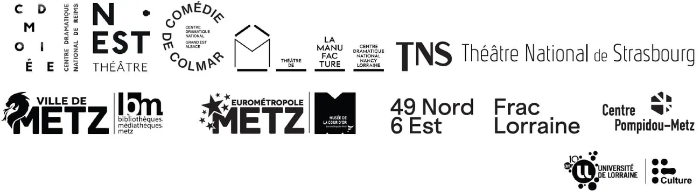
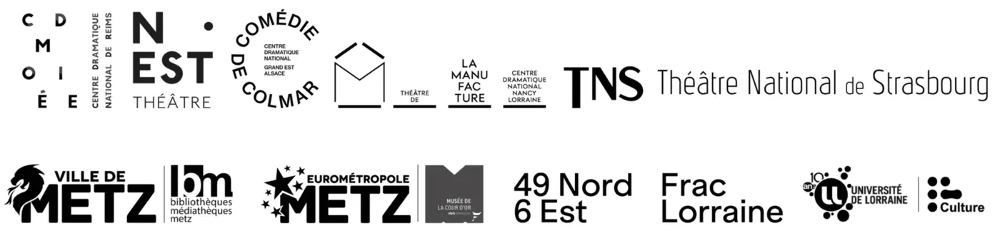
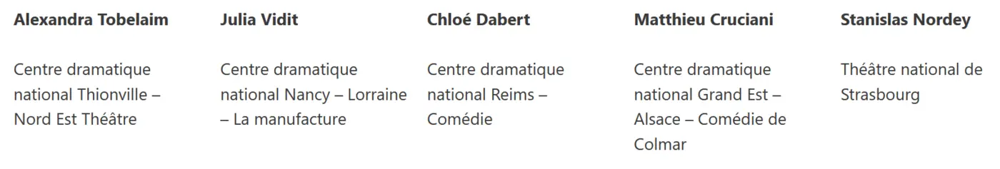

Partenaires
Institutions, lieux, compagnies et équipes universitaires : celles et ceux qui font vivre la Biennale.
Sans les institutions, les lieux, les compagnies, les bénévoles et les équipes universitaires, la Biennale n’existerait pas. Voici les soutiens, édition par édition, tels que l’association les a communiqués.
Les montants des financements ne sont pas publiés par l’association : seuls ceux figurant dans des documents publics sont mentionnés.
7e Biennale
- Théâtre Bernard-Marie Koltès – Université de Lorraine coorganisateur
- Ville de Metz, Eurométropole de Metz, Région Grand Est, Eurodépartement de Moselle organisateurs institutionnels cités par le CREM
- Centre Pompidou-Metz · FRAC Lorraine · Musée de la Cour d’Or · Bibliothèques-Médiathèques de Metz
- Médiathèque départementale Victor Madelaine (Nilvange) · Espace Molière (Talange)
- Festival du film arabe de Fameck / Val de Fensch
- Galerie Octave Cowbell · Le Quai, centre social et culturel de Metz-Sablon · Église Saint-Maximin
- Passages Transfestival · Récit’Chazelles, résidence d’auteurs · Voix Haute · ELU (Échanges Lorraine Ukraine)
- Le Préau – CDN de Normandie-Vire création du spectacle d’ouverture
- CREM, Université de Lorraine
- Librairie Autour du Monde librairie éphémère
Le conseil municipal de Metz a voté, en septembre 2025, une subvention de 3 000 € à Quai Est au titre du volet d’éducation artistique et culturelle de la Biennale (délibération).

Prix Koltès



Pour le Prix, les quatre textes finalistes sont mis en voix par les artistes-directeurs des Centres dramatiques nationaux du Grand Est (La Manufacture – Nancy, La Comédie – Reims, le Nest – Thionville, La Comédie – Colmar, notamment pour l’édition 2025).
4e Biennale
Partenaires publics
- DRAC Grand Est Festival de lectures de théâtre contemporain
- Ville de Metz soutien de l’ensemble des services
- Conseil régional Grand Est
- Metz Métropole équipements
- Conseil départemental de la Moselle festival et appel à création partagée « J’appelle mes frères »
- Université de Lorraine — Espace B.-M. Koltès, Théâtre du Saulcy
- Bibliothèques et médiathèques de Metz
- L’AGORA
- Conservatoires à rayonnement régional de Metz Métropole et du Grand Nancy
- Musée de la Cour d’Or
- Ville de Serémange-Erzange
- Communauté de communes du Val de Fensch
Co-organisateurs, animateurs d’ateliers, de lectures et de spectacles
- Compagnies : La Mandarine Blanche, Pardès Rimonim, Astrov, des 4 Coins, du Jarnisy, Les Heures Paniques, L’SKBL, L’Assolatelier, de l’Escalier
- Galerie Faux Mouvement, centre d’art contemporain
- The Bloggers Cinéma Club · Le KLUB, cinéma art et essai
- Collège Charles de Gaulle et lycée professionnel Jean Macé (Fameck) · lycée René Cassin (Metz)
- Association d’insertion sociale de la Fensch · Association humanitaire aux peuples opprimés de Fameck
Rejoignez le quai
Vous souhaitez soutenir la Biennale ou le Prix, accueillir une lecture ou proposer un projet ? Écrivez-nous.
Nous contacter →Partenaires des éditions 2012 à 2016 et 2023 : à compléter si l’association le souhaite.